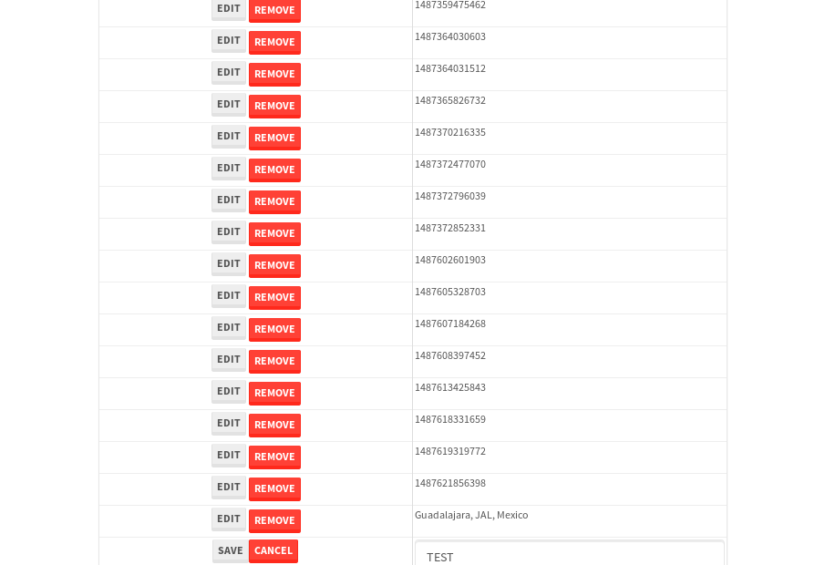

tbColumn.Grid Sorting - 31.287sTests: 5Skipped: 0Failures: 0 should sort data in ascending order then on descending order when sorting by Order Id column - 8.776sTests passed: 100.00%should order data in ascending order when click-sorting an unsorted text column - 5.56sTests passed: 100.00%should order data in descending order when click-sorting an ascending-sorted text column - 5.752sTests passed: 100.00%should order data in ascending order when click-sorting an unsorted date column - 5.186sTests passed: 100.00%should order data in descending order when click-sorting twice an unsorted date column - 6.012sTests passed: 100.00%
tbSingleForm.Form validations - 2.715sTests: 2Skipped: 0Failures: 0 should have an empty required field - 1.71sTests passed: 100.00%should not be able to click on save - 1.005sTests passed: 100.00%
Tubular Filters.tbColumnFilter - 111.418sTests: 12Skipped: 0Failures: 0 should cancel filtering when clicking outside filter-popover - 9.291sTests passed: 100.00%should disable Value text-input for "None" filter - 6.636sTests passed: 100.00%should disable apply button for "None" filter - 7.045sTests passed: 100.00%should decorate popover button when showing data is being filtered for its column - 12.429sTests passed: 100.00%should correctly filter data for the "Equals" filtering option - 8.819sTests passed: 100.00%should correctly filter data for the "Not Equals" filtering option - 10.351sTests passed: 100.00%should correctly filter data for the "Contains" filtering option - 8.842sTests passed: 100.00%should correctly filter data for the "Not Contains" filtering option - 8.428sTests passed: 100.00%should correctly filter data for the "Starts With" filtering option - 7.277sTests passed: 100.00%should correctly filter data for the "Not Starts With" filtering option - 7.016sTests passed: 100.00%should correctly filter data for the "Ends With" filtering option - 7.193sTests passed: 100.00%should correctly filter data for the "Not Ends With" filtering option - 6.949sTests passed: 100.00%
Tubular Filters.tbColumnDateTimeFilter - 138.042sTests: 12Skipped: 0Failures: 0 should cancel filtering when clicking outside filter-popover - 7.489sTests passed: 100.00%should disable Value text-input for "None" filter - 6.884sTests passed: 100.00%should disable apply button for "None" filter - 6.745sTests passed: 100.00%should clear filtering when clicking on Clean button - 18.043sTests passed: 100.00%should decorate popover button when showing data is being filtered for its column - 12.037sTests passed: 100.00%should correctly filter data for the "Equals" filtering option - 6.922sTests passed: 100.00%should correctly filter data for the "Not Equals" filtering option - 7.502sTests passed: 100.00%should correctly filter data for the "Between" filtering option - 12.691sTests passed: 100.00%should correctly filter data for the "Greater-or-equal" filtering option - 12.025sTests passed: 100.00%should corretlly filter data for the "Greater" filtering option - 12.055sTests passed: 100.00%should correctly filter data for the "Less-or-equal" filtering option - 11.975sTests passed: 100.00%should correctly filter data for the "Less" filtering option - 12.358sTests passed: 100.00%
Tubular Filters.tbColumnOptionsFilter - 82.445sTests: 3Skipped: 0Failures: 0 should cancel filtering when clicking outside filter-popover - 9.303sTests passed: 100.00%should decorate popover button when showing data is being filtered for its column - 12.431sTests passed: 100.00%should filter column-elements in accordance to the selected filter when selecting a single option - 48.968sTests passed: 100.00%
Tubular Filters.tbTextSearch - 49.673sTests: 5Skipped: 0Failures: 0 min-chars is not set - 1.134sTests passed: 100.00%should filter data in searchable-column customer name to matching inputted text, starting from 3 characters - 7.24sTests passed: 100.00%should filter data in searchable-column shipper city to matching inputted text, starting from 3 characters - 12.588sTests passed: 100.00%should show clear button when there is inputted text only - 6.465sTests passed: 100.00%should clear filtering when clicking clear button - 16.717sTests passed: 100.00%
tbForm related components.tbCheckboxField - 7.823sTests: 2Skipped: 0Failures: 0 should save changes on "SAVE" - 3.705sTests passed: 100.00%should discard changes on "CANCEL" - 2.594sTests passed: 100.00%
tbForm related components.tbDropDownEditor - 12.271sTests: 5Skipped: 0Failures: 0 should set initial input value to the value of "value" attribute when defined - 2.129sTests passed: 100.00%should show the component name value in a label field when "showLabel" attribute is true - 1.987sTests passed: 100.00%should show a help field equal to this attribute, is present - 2.317sTests passed: 100.00%should submit modifications to item/server when clicking form "Save" - 2.875sTests passed: 100.00%should NOT submit modifications to item/server when clicking form "Cancel" - 2.363sTests passed: 100.00%
tbForm related components.tbTextArea - 18.689sTests: 7Skipped: 0Failures: 0 should set initial input value to the value of "value" attribute when defined - 2.353sTests passed: 100.00%should be invalidated when the number of chars is not in the range of "min" and "max" attributes - 2.676sTests passed: 100.00%should show the component name value in a label field when "showLabel" attribute is true - 2.361sTests passed: 100.00%should show a help field equal to this attribute, is present - 1.942sTests passed: 100.00%should require the field when the attribute "required" is true - 2.755sTests passed: 100.00%should submit modifications to item/server when clicking form "Save" - 3.334sTests passed: 100.00%should NOT submit modifications to item/server when clicking form "Cancel" - 2.3sTests passed: 100.00%
tbForm related components.tbDateEditor - 17.341sTests: 6Skipped: 0Failures: 2 should set initial date value to the value of "value" attribute when defined - 2.228sExpected false to be true.✗Tests passed: 0.00%should be invalidated when the date is not in the range of "min" and "max" attributes - 2.561sTests passed: 100.00%should show the component name value in a label field when "showLabel" attribute is true - 1.861sTests passed: 100.00%should show a help field equal to this attribute, is present - 2.878sTests passed: 100.00%should submit modifications to item/server when clicking form "Save" - 2.962sTests passed: 100.00%should NOT submit modifications to item/server when clicking form "Cancel" - 3.15sExpected false to be true.✗Tests passed: 0.00%
tbForm related components.tbTypeaheadEditor - 17.782sTests: 7Skipped: 0Failures: 0 should show an options list when there is an API-info/component entered-data - 2.408sTests passed: 100.00%should select the option clicked - 2.427sTests passed: 100.00%should show a "delete" button when an option/match is selected, and delete the option if button is clicked - 2.365sTests passed: 100.00%should show a label value equal to the component name when "showLabel" attribue is true - 1.856sTests passed: 100.00%should require a value when "require" attribute is true - 2.876sTests passed: 100.00%should submit modifications to item/server when clicking form "Save" - 3.22sTests passed: 100.00%should NOT submit modifications to item/server when clicking form "Cancel" - 1.981sTests passed: 100.00%
tbForm related components.tbSimpleEditor - 19.974sTests: 9Skipped: 0Failures: 0 should set initial input value to the value of "value" attribute when defined - 2.218sTests passed: 100.00%should be invalidated when the number of chars is not in the range of "min" and "max" attributes - 2.133sTests passed: 100.00%should show the component name value in a label field when "showLabel" attribute is true - 1.975sTests passed: 100.00%should set input placeholder to the value of "placeholder" attribute - 2.044sTests passed: 100.00%should validate the control using the "regex" attribute, if present - 1.817sTests passed: 100.00%should show a help field equal to this attribute, is present - 1.672sTests passed: 100.00%should require the field when the attribute "required" is true - 1.935sTests passed: 100.00%should submit modifications to item/server when clicking form "Save" - 3.242sTests passed: 100.00%should NOT submit modifications to item/server when clicking form "Cancel" - 2.077sTests passed: 100.00%
tbForm related components.tbNumericEditor - 15.799sTests: 7Skipped: 0Failures: 0 should set initial component value to the value of "value" attribute when defined - 1.731sTests passed: 100.00%should be invalidated when the entered number is not in the range of "min" and "max" attributes - 2.343sTests passed: 100.00%should show the component name value in a label field when "showLabel" attribute is true - 1.882sTests passed: 100.00%should show a help field equal to this attribute, is present - 2.07sTests passed: 100.00%should require the field when the attribute "required" is true - 1.853sTests passed: 100.00%should submit modifications to item/server when clicking form "Save" - 3.2sTests passed: 100.00%should NOT submit modifications to item/server when clicking form "Cancel" - 2.115sTests passed: 100.00%
tbForm Connection Error NoModelKey - 2.832sTests: 1Skipped: 0Failures: 0 tbForm connection error functionality - 0.604sTests passed: 100.00%
tbForm Connection Error NoServerUrl - 2.992sTests: 1Skipped: 0Failures: 0 tbForm connection error functionality - 0.514sTests passed: 100.00%
tbGridComponents - 33.872sTests: 6Skipped: 0Failures: 4 should add item with newRow method - 4.565sExpected 'EDIT REMOVE TEST' not to be 'EDIT REMOVE TEST'.✗Tests passed: 50.00%should add item with newRow method and cancel action - 1.547sTests passed: 100.00%should update item with tbSaveButton - 2.748sExpected '' to be 'TEST'.✗Tests passed: 0.00%should NOT update item on cancel Update action - 0.988sFailed: ElementNotVisibleError✗Tests passed: 0.00%should remove item with tbRemoveButton - 21.388sExpected 64 not to be 64, 'should remove the row from the table'.✗Tests passed: 50.00%should NOT remove item on cancel Remove action - 1.196sTests passed: 100.00%
tbGridPager.navigation buttons - 9.65sTests: 1Skipped: 0Failures: 0 should perform no action when clicking on the numbered navigation button corresponding to the current-showing results page - 1.401sTests passed: 100.00%
tbGridPager.navigation buttons.first/non-last results page related functionallity - 4.105sTests: 2Skipped: 0Failures: 0 should disable "first" and "previous" navigation buttons when in first results page - 1.915sTests passed: 100.00%should enable "last" and "next" navigation buttons when in a results page other than last - 2.19sTests passed: 100.00%
tbGridPager.navigation buttons.last/non-first results page related functionallity - 4.144sTests: 2Skipped: 0Failures: 0 should disable "last" and "next" navigation buttons when in last results page - 1.948sTests passed: 100.00%should enable "first" and "previous" navigation buttons when in a results page other than first - 2.196sTests passed: 100.00%
tbGridPager.page navigation - 8.153sTests: 5Skipped: 0Failures: 0 should go to next results page when clicking on next navigation button - 2.28sTests passed: 100.00%should go to previous results page when clicking on previous navigation button - 1.742sTests passed: 100.00%should go to last results page when clicking on last navigation button - 1.499sTests passed: 100.00%should go to first results page when clicking on first navigation button - 1.285sTests passed: 100.00%should go to corresponding results page when clicking on a numbered navigation button - 1.346sTests passed: 100.00%
tbGridPagerInfo - 6.135sTests: 2Skipped: 0Failures: 0 should show text in accordance to numbered of filter rows and current results-page - 1.566sTests passed: 100.00%should show count in footer - 0.512sTests passed: 100.00%
tbHttp - 17.559sTests: 8Skipped: 1Failures: 0 should be authenticated - 2.517sTests passed: 100.00%retrieve data - 2.451sTests passed: 100.00%should not login bad credentials - 2.683sTests passed: 100.00%should have a refresh token - 2.393sTests passed: 100.00%should remove authentication - 2.517sTests passed: 100.00%get method-Is not authenticated - 2.602sTests passed: 100.00%post method-Is not authenticated - 2.396sTests passed: 100.00%should regenerate access token on post - 0s***Skipped***Tests passed: 0%
tbPageSizeSelctor - 9.691sTests: 4Skipped: 0Failures: 0 should filter up to 10 data rows per page when selecting a page size of "10" - 2.672sTests passed: 100.00%should filter up to 20 data rows per page when selecting a page size of "20" - 1.484sTests passed: 100.00%should filter up to 50 data rows per page when selecting a page size of "50" - 2.186sTests passed: 100.00%should filter up to 100 data rows per page when selecting a page size of "100" - 1.877sTests passed: 100.00%
tbRowSelectable - 10.174sTests: 2Skipped: 0Failures: 0 selected rows - 4.644sTests passed: 100.00%unselected rows - 3.716sTests passed: 100.00%
tbSingleForm - 22.627sTests: 8Skipped: 0Failures: 1 should load correct info - 2.276sTests passed: 100.00%should change customer name - 2.702sTests passed: 100.00%should save it - 4.033sFailed: Element is not enabled✗Tests passed: 0.00%should clear the inputs - 2.558sTests passed: 100.00%should update - 3.375sTests passed: 100.00%should reset editor - 2.484sTests passed: 100.00%should not save if not Changes - 2.536sTests passed: 100.00%should not be able to click on save - 2.663sTests passed: 100.00%


{kind=link}